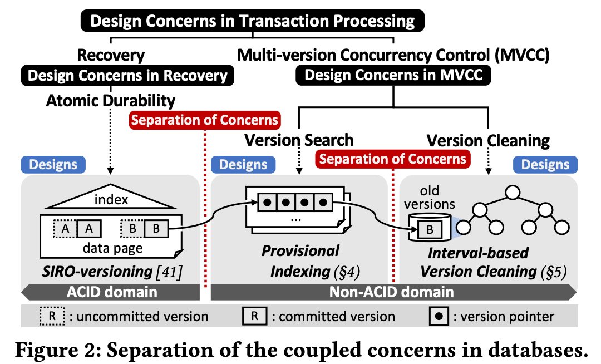
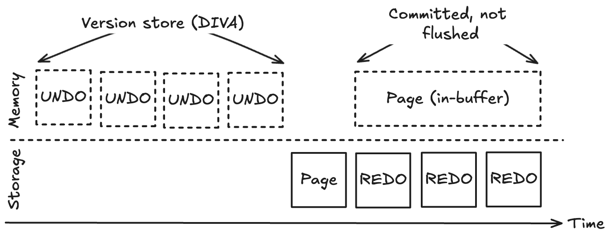

원본 논문
- 이 글은 DIVA: Making MVCC Systems HTAP-Friendly (SIGMOD’22) 논문을 읽고 정리한 글입니다.
- 별도의 명시가 없으면, 본 논문에서 그림을 가져왔습니다.
3.0. Prologue
- 본 section 에서는 어떻게 DIVA 가 기존의 coupled design 의 문제점들을 해결하고 있는지 설명한다.

- 그리고 위 그림이 기존의 coupling 된 고려사항 (recovery, version search, version clean) 들이 어떻게 DIVA 에서는 decoupling 되고 있는지를 계층적으로 보여주는 것이다.
- 각 고려사항들을 “decoupling” 시킨다는 것은 정확하게는 별도의 자원을 사용하고 별도의 방법으로 관리된다는 것을 뜻한다.
- 또한 이러한 decoupling 은 어떤 disk-based MVCC 시스템에서도 general 하게 적용될 수 있도록 design 되었다고 한다.
- 그럼 이제 각각에 대해 좀 더 살펴보자.
3.1. Separation of recovery and MVCC.
- Transactional recovery 는 제일 최근의 committed version 을 version store 에서 분리하고, redo log 만 신경쓰면 version store 에 접근하지 않고도 충분히 가능하다.
- 약간 아래 그림처럼 되지 않을까 싶다.

- 그리고 더이상 recovery 에 사용되지 않게 된 undo log 는 version store 로 보내게 된다.
- 이 undo log 는 MVCC 의 관점에서 보면, old version 들에 해당하고 따라서 old version 들은 latest version 에서 분리해서 별도의 version store 에 보내는 격이다.
- 즉, 이건 record 와 latest version 을 Primary index 에 달고 나머지 old version 들은 별도의 version store 에 보내는 것으로 정리할 수 있는데, 이 아이디어는 정교수님의 이전 논문 에서 제시한 SILO-versioning 과 같다.
- 그래서 DIVA 에서도 이 SILO-versioning 을 활용해서 recovery 를 수행한다.
3.2. Separation of search and reclamation.
- MVCC 에서의 두 고려사항 (version search 와 version clean) 을 분리하는 것은 version index 와 version store (referred data versions) 를 분리시킨 다음, 각자 다른 방법으로 관리하는 것으로 완성할 수 있다.
- 또한 이 version index 와 version store 는 cross-reference 되는 일이 없다고 한다.
- 즉, version index 는 version store 를 가리키지만 version store 에서 version index 를 가리키는 일은 없다는 것.
- 이 “분리” 가 가능한 것은 cleaning 작업이 독립적 (asynchronous) 으로 수행될 수 있다는 점이 하나의 요소로 작용한다.
- 독립적으로 돌아갈 수 있는 이유는 cleaning 을 할 때 그것을 사용하고 있는 놈이 있는지를 먼저 확인하기 때문.
3.3. Design rationale for version indexing.
- MVCC 에서 각 version 들은 다음과 같은 성격을 지닌다.
- 이놈은 Ephemeral 하다. 즉, 일시적으로만 존재하는 놈이라는 것.
- 그리고 이놈의 lifetime 은 visibility range 뿐만 아니라 live transaction 들에 영향을 받는다는 것이다.
- 즉, 새로 tx 가 생성되었을 때 이놈을 볼 수 있냐 없냐 (visibility range) 뿐만이 아니고,
- 그놈을 사용하고 있는 live transaction 들이 있냐 없냐도 영향을 준다는 것.
- 첫번째 성격을 활용해서 version index 는 UNIX Inode 와 비슷한 구조를 가지게 된다.
- 물론 완전 동일하지는 않다; Inode 의 direct, indirect 구조를 차용하고 다른 불필요한 요소들은 버린다.
- 이 점은 version index 가 차지하는 공간을 적은 Fragmentation 로도 유동적으로 바꿀 수 있게 해준다.
- 즉, 어떤 고정된 크기의 공간을 사용하면 internal fragmentation 이 발생하고, 가변크기를 사용하면 External fragmentation 문제가 발생하는데, inode 구조를 사용하면 적은 internal fragmentation 으로도 가변 크기의 공간을 사용할 수 있기 때문.
- Version 들이 Ephemeral 하기 때문에 이들을 묶어두는 version index 는 커버하는 크기가 가변적이어야 하고, 이 가변 크기 공간을 효율적으로 묶어주는 자료구조가 바로 inode 인 것.
- 이 Ephemeral 한 성격 때문에 DIVA 에서는 version index 를 Provisional version index 로 부른다.
- 이에 대한 설명은 Section 4.3.1. 에서 더 자세히 나온다.
- 그리고 이 (version 이 삭제되어) version index 의 공간을 줄이는 것은 online space compaction 으로 수행한다.
- 이에 대한 설명은 Section 4.3.2. 에서 더 자세히 다룬다.
3.4. Design rationale for version cleaning.
Skip advice
- 이 부분 설명이 약간 어렵게 되어 있다. 지금 당장 이해가 안된다면 그냥 넘어가자.
- Section 3.3. 에서 설명한 두 번째 성격을 활용해서, DIVA 에서는 기존의 비싼 tracing 기반의 version cleaning 을 해결한다.
- 이 ”tracing 기반” 이라는 것은 아무래도 어떤 version 을 골라 이놈을 사용하고 있는 tx 가 있는지 일일히 검사하는 것을 의미할 것이다.
- 여기서의 아이디어는 이것이다:
- 만약 reference tracing 을 “individual (version) data” 의 stallness 를 판단하기 위한 “(version 및 tx 를 포함하는)data” 에 대한 하나의 “query” 로 본다면, 이것은 duality of data and queries 문제로 회귀할 수 있다는 점이다.
Duality of data and queries
- 이 개념이 referenced paper 에서 나올 것 같긴 한데, 안찾아봤다.
- 맥락으로 파악해 보면,
- 전체의 어떤 부분에 대해 판단하기 위해 전체에 대한 작업을 하는 것은 부분에 대한 작업으로 회귀할 수 할 수 있다는 뜻인듯
- 따라서 Reference tracing query 를 수행하는 대신, version 과 tx 가 이것과 동등하지만 훨씬 사소한 작업을 처리한다.
- 조금 더 구체적으로 말하자면,
- 이 query 를 Fixed time-interval 로 분할해 놓고
- Version 과 transaction 은 각자에게 맞는 interval 에 본인을 등록하게 된다.
- Version data 는 자신의 visibility range 에 따라 맞는 interval 에 등록하고,
- Transaction 은 자신이 들고 있는 snapshot 에 따라 맞는 interval 에 등록한다.
- 이 “등록” 하는 것이 위에서 말한 “동등하지만 사소한 작업” 이다.
- 그리고 어떤 interval 에 등록된 tx 들이 전부 commit 되면 해당 interval 을 통째로 (묶여있는 version 까지) 날려버린다.
- 이렇게 함으로써 reference tracing query 를 수행하지 않고 bulk cleanup 을 하게 된다.